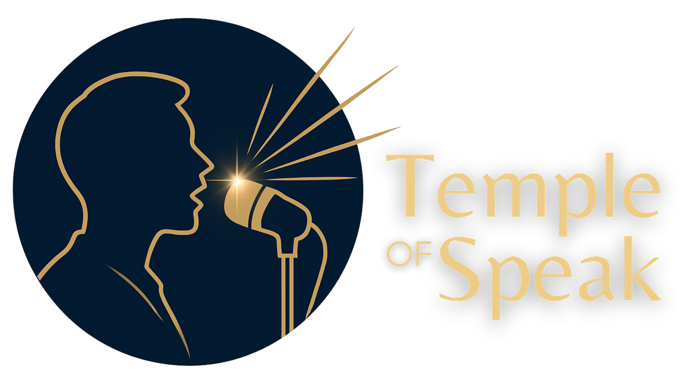
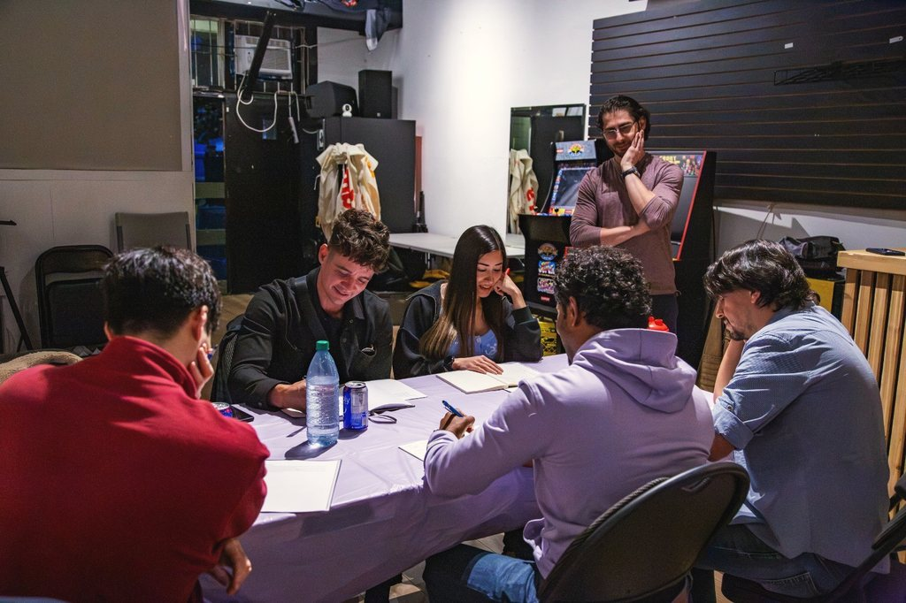
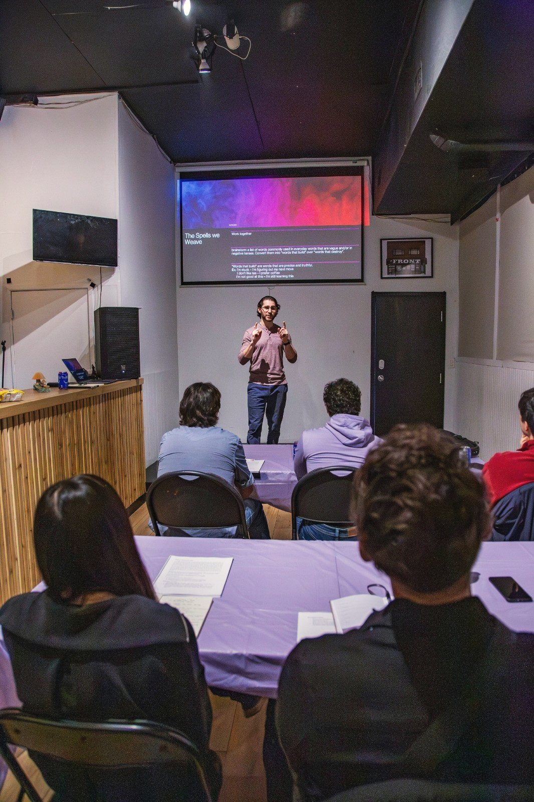
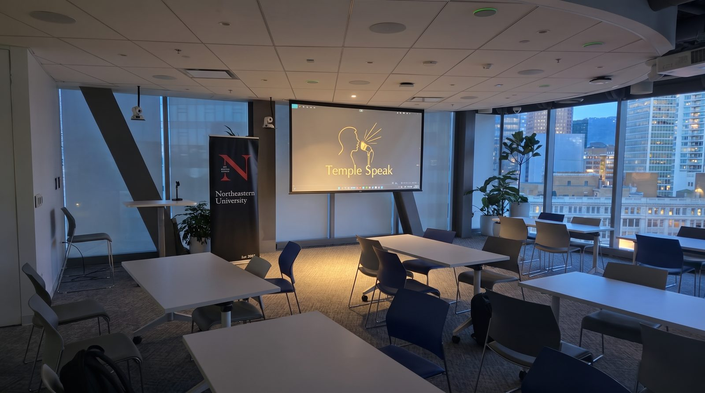

Temple of Speak · A 10-week program by Vahan Bedros · Vocal Alchemy
Come shaking if you need to. You’ll leave standing taller.
Ten weeks, about ten people, three hours a week, in person in Vancouver. We start with what you feel and finish with your own story.
Not performance
public speaking, in this space, is not performance. It is a life practice.
Why I chose temple: because your body is a temple.
The program isn’t about learning how to speak, it’s about learning how to be heard.
Vahan Bedros, founder of Temple of Speak


A Temple of Speak session
Vocal Alchemy
One practice. Three pillars.

Temple of SpeakA program by Vahan Bedros
-
Emotional Embodiment
Every session opens with a guided meditation. We start with what you feel, in your body, before you say a word.
-
Authentic Expression
Improv, storytelling and shadow work, so you stop performing a speaker and start sounding like yourself.
-
Vocal Empowerment
Voice control and body language, practised every week, until you can stand up and be heard.
The program
The circle of ten.
Ten weeks. Three hours a week. About ten people, in person. Each session opens with a guided meditation.
Weeks 1–7
Emotions, given a voice.
With voice control and body language.
Weeks 8–10
Your story, your vision.
Your story and a vision talk.
Fall 2026 cohort in session since Sept 17
Week 1
Emotions, given a voice
Weeks 1–7, with voice control and body language.
Week 2
Emotions, given a voice
Week 3
Emotions, given a voice
Week 4
Emotions, given a voice
Week 5
Emotions, given a voice
Week 6
Emotions, given a voice
Week 7
Emotions, given a voice
Week 8
Your story, your vision
Weeks 8–10: your story and a vision talk.
Week 9
Your story, your vision
Week 10
Your story, your vision


Intro workshops
Come experience it.
Three hours in Vancouver. Speaking exercises, embodiment and improv, moving you from performance mode to expression mode.
- Length
- Three hours
- Where
- Vancouver
- What
- Speaking exercises, embodiment, improv
Next date to be announced.
Thank you all for being here tonight.
Thank you all for being here tonight.
From the room
Voices from the room.
Vahan’s workshop was very thoughtfully organized, with a warm and welcoming atmosphere that made it easy to relax and gently ease into public speaking.
Over the past two months, I’ve been attending Toastmasters, and now I clearly see the difference — Toastmasters tends to be quite formal and lacks focus on emotional expression. Vahan’s workshop really fills that gap. It’s a brilliant idea, and the execution was excellent. I’m already looking forward to future sessions!
Vahan is an incredibly gifted public speaker who can really fill up a room with his presence and poise. It’s something I’ve been trying to develop in myself as well. The leading of shadow work processes was deftly handled for helping me work through some of my own fears and inhibitions and blockages around connecting with a room full of people. And the truth was that I had trouble connecting with myself and my own power, so of course others had trouble feeling that also.
Coming into a new relationship with myself and my own fears and vulnerabilities caused an instantaneous shift in my own ability to connect with others in the moment in a crowd. It was remarkable to witness.
I highly recommend connecting with Vahan to learn how to get out of your own way when it comes to connecting with a group, and getting others and yourself to really feel you and the message you have for the world.
Vahan’s Temple of Speak facilitation was flawless. There was so much thought and intention put into the flow of the workshop. From guiding participants through the visualization of their fears, to public speaking and storytelling, to playing out and making fun of those fears—the whole workshop was orchestrated not only to help us overcome the fear of public speaking, but also served as a container for our shadows and insecurities to be witnessed with safety. I especially loved how he weaved shadow work and child-like play into public speaking, which brings freshness to something that is scary for most people. I benefited a lot from the inner work that this workshop catalysed for many weeks after. Thank you Vahan!
Your words here.

Temple of Speak · A 10-week program by Vahan Bedros
The floor is yours.
A 10-week, in-person program for about ten people. The Fall 2026 cohort has been in session since Sept 17.